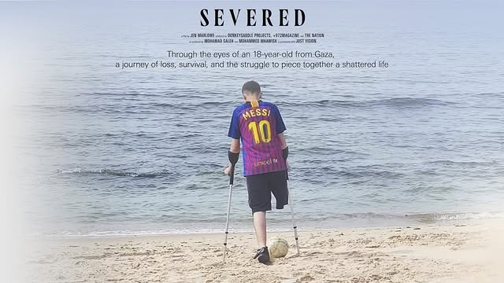

Severed
On February 12th, in recognition of two years of Israel’s relentless genocide against Palestinians in Gaza, as well as National Disability Awareness Month in the U.S., LVL3 invites you to a screening of the powerful, new, short documentary Severed. Severed follows Mohamad Saleh, a Palestinian teenager from Gaza who lost his leg at only 12 years old, and has survived five Israeli military assaults. In those attacks, he lost his home, close family members, and best friends. Mohamad’s story is both deeply personal and emblematic of the thousands of Palestinians disabled by Israel’s ongoing genocide in Gaza.
We will also be sharing this film alongside another short documentary titled Cycling Under Siege in Gaza and a recorded panel discussion of Severed.
This is an opportunity to center Palestinian voices, deepen understanding of the genocide, and build solidarity between Palestinians and the larger disability justice community.
This event will take place at the gallery on Thursday, February 12th at 6pm. Please RSVP at the link in our bio. https://linktr.ee/lvl3official?
Together, we can take action on disability justice and Palestine.